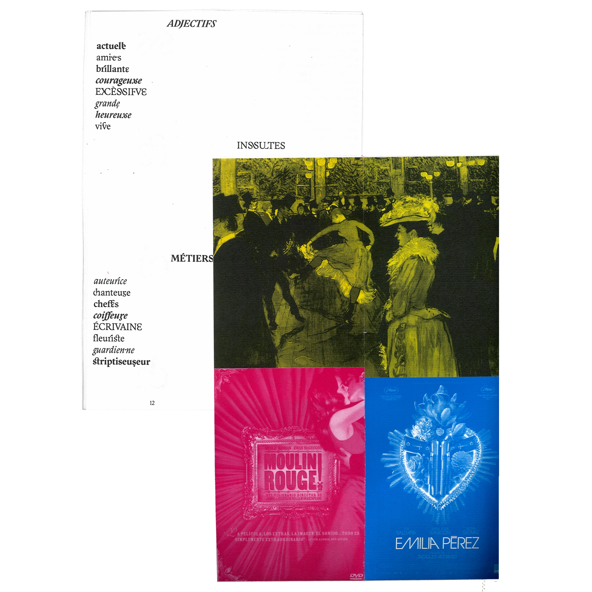
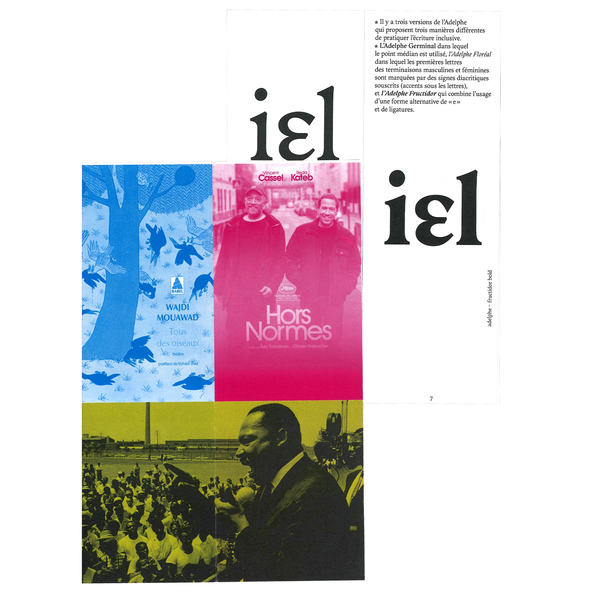
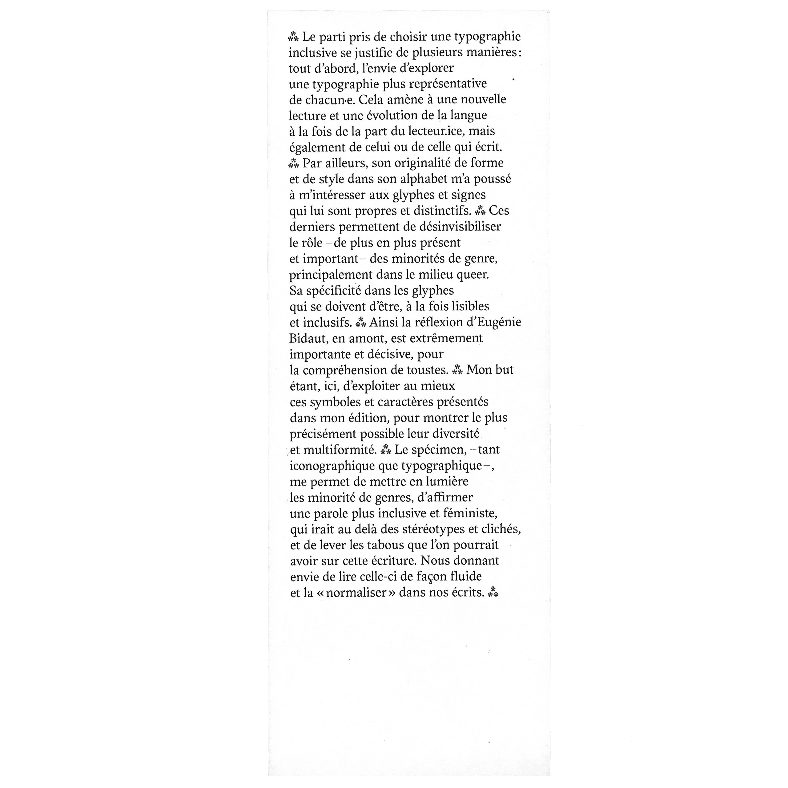

Ce specimen typograpique s'est basé sur le point de départ suivant: l'inclusivité.
La typothèque Bye Bye Binary réalise de nombreuses fonts sur le principe de caractères typographiques incluant les notions de genres.
Par la suite, le développement d'un livret sur des images reprenant cette idée de montrer à lire et voir ceux qu'on ne voit pas ou qu'on laisse à l'écart est apparu. Celui-ci comprend affiches de films, livres, oeuvres artisitques, personnalités ayant aidé à rendre ce monde plus ouvert sur les minorité.
Adelphe signifie à la fois frère et sœur, indépendamment de son genre, ce nom est très utilisé au sein des communautés militantes queers.
Eugénie Bidault -créatrice de cette font- l'éxplique très bien: "c’est aussi un mot qui trouve son étymologie dans le grec ancien, à la manière des mots savants. Et il y a une volonté avec ce caractère d’aller sur ce terrain, sur le terrain de la culture qui s’auto-définit comme « haute » et savante. Et, ainsi, de ne pas se laisser confisquer l’histoire de la langue et de l’écriture par le camp conservateur. C’est pourquoi l’Adelphe, dans son dessin, présente des proportions classiques, héritées de la Renaissance, et un tracé proche de la calligraphie, avec une fluidité dans le ductus qui permet de produire des formes harmonieuses, y compris dans le dessin des signes inclusifs."


